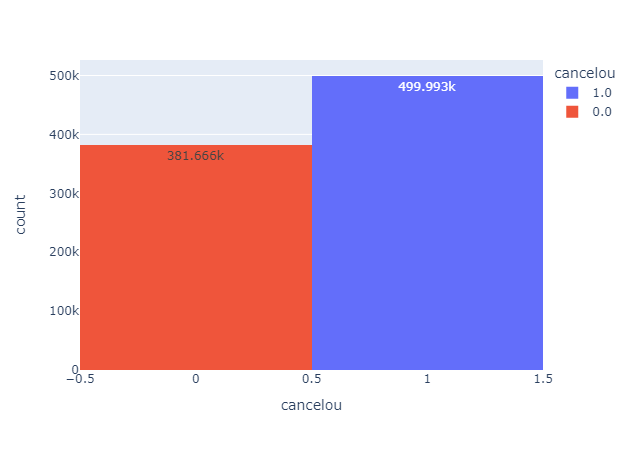
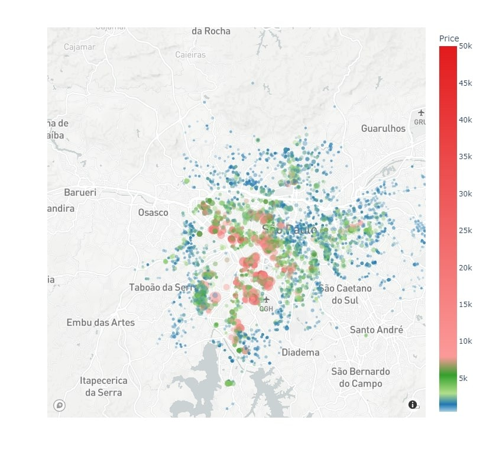
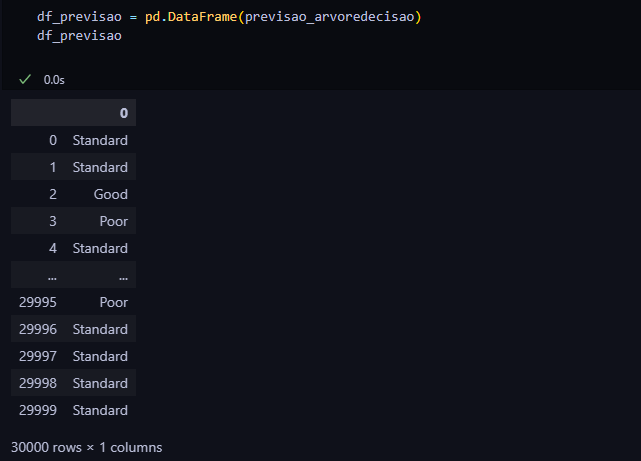

Breast Cancer Prediction Model with MicroRNA
Developed a machine learning model to identify the presence of breast cancer on patients using microRNA expression data.

Developed a machine learning model to identify the presence of breast cancer on patients using microRNA expression data.
Analyzed customer churn data to provide actionable insights for retention strategies.
Predicted rental prices based on property features using regression models.
Built a predictive model to assess customer creditworthiness and minimize financial risk.
